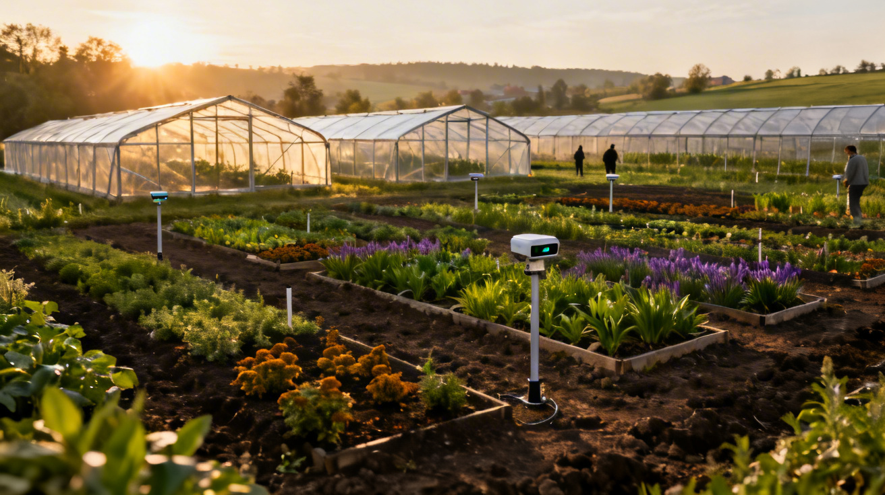
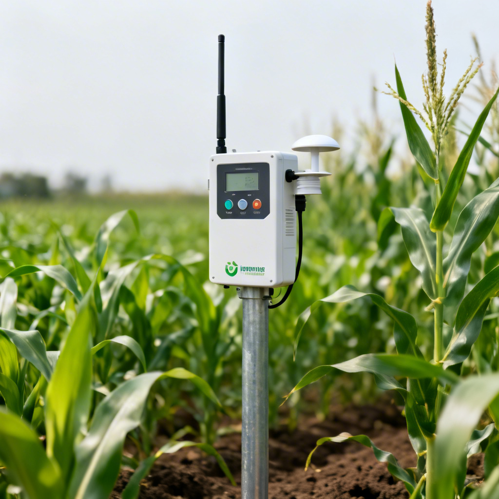
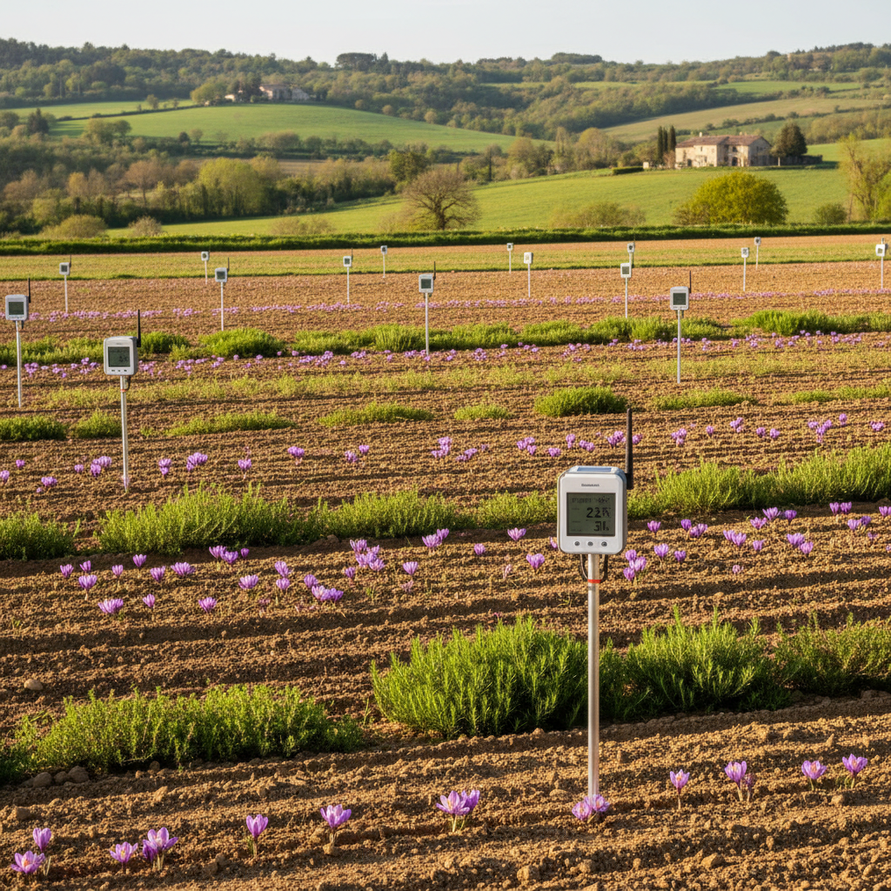
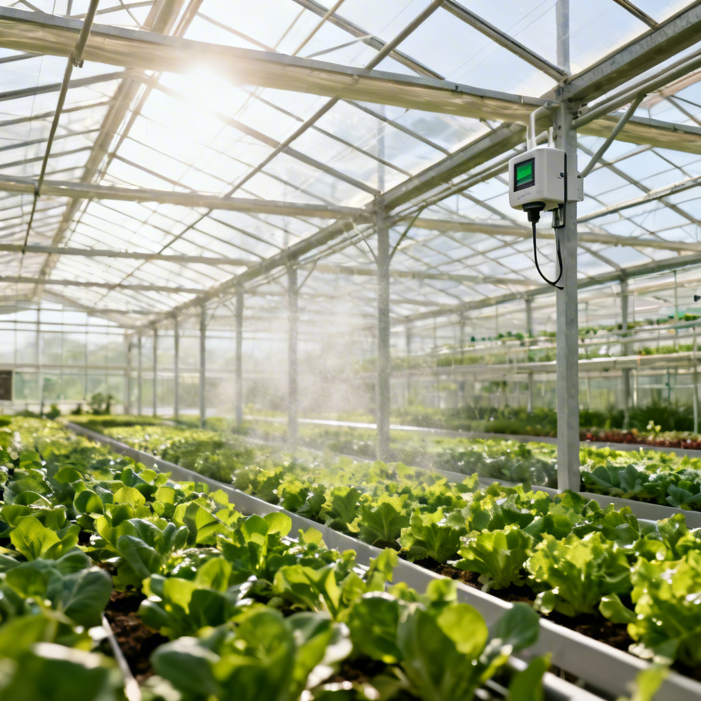
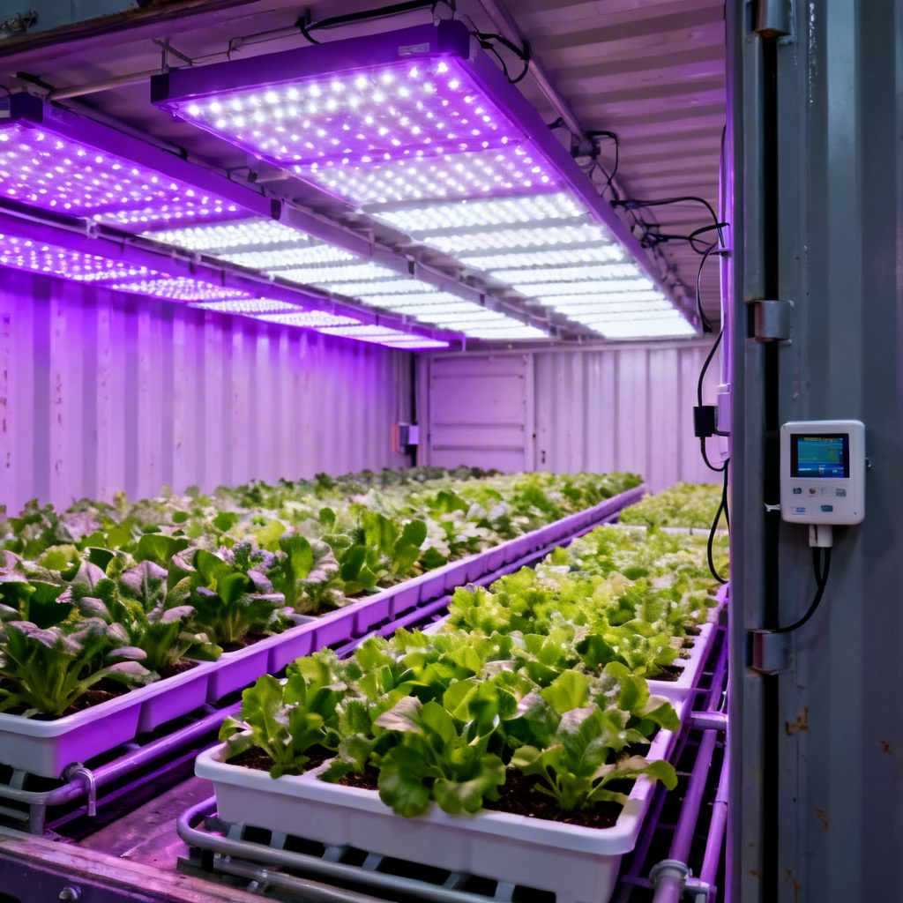
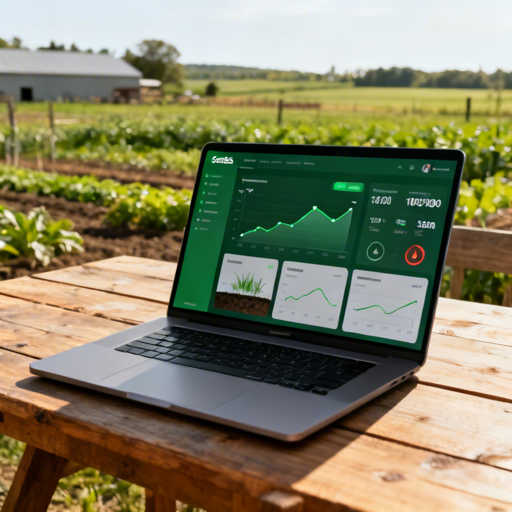
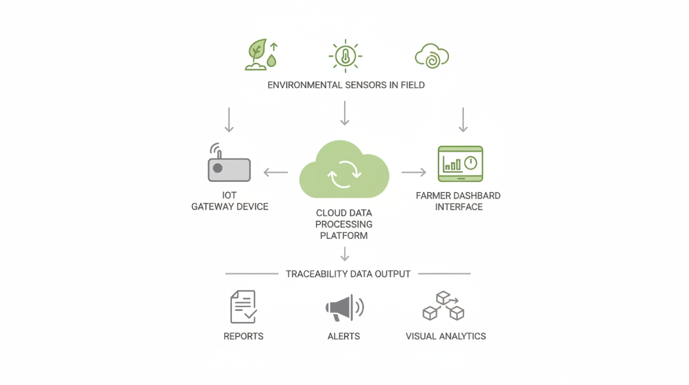
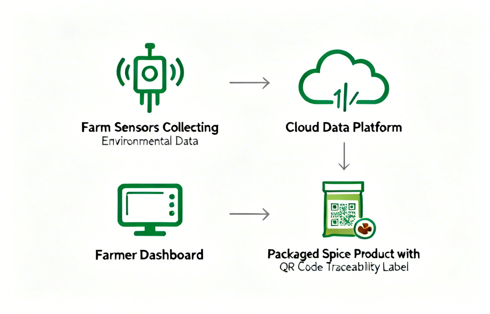

Improve yield with data-driven cultivation while automatically generating production records for traceability.
Temperature and humidity swings cause inconsistent crop quality and unexpected losses.
Without real-time data, growers can't optimize conditions for maximum output.
Export markets require detailed production records that are time-consuming to maintain manually.
A low-cost environmental monitoring system designed for spice growers. Sensor data helps improve yield while automatically generating structured production records for export compliance.

Temperature, humidity and soil conditions are recorded in real time.
Environmental data is securely transmitted to the cloud.
Farmers receive alerts and insights to stabilize growing conditions.
Production logs are automatically created from environmental data.
SpiceTrace adapts to your growing environment

Affordable sensors for small farmers growing spices in open farms.

Advanced environmental control for higher yield consistency.

Container farms or hydroponic systems for intensive spice cultivation.
SpiceTrace combines environmental sensing, cloud analytics, and a simple farmer dashboard to transform raw farm data into actionable insights and automated production records.
Monitor environmental conditions in real time, receive alerts when thresholds change, and review historical environmental data for each growing cycle.

Environmental sensors placed in the field or greenhouse continuously measure temperature, humidity, and soil conditions. Data is transmitted securely to the SpiceTrace cloud platform.

As environmental data is collected during cultivation, structured production records are automatically generated. These records can support traceability requirements for specialty crop markets and export documentation.

We are currently working with early spice growers to test the SpiceTrace system.
We'll be in touch soon with details about the SpiceTrace pilot program.